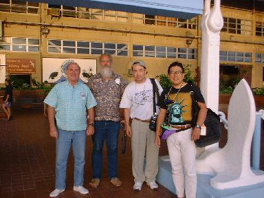
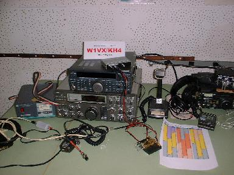
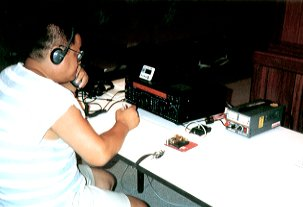
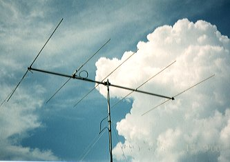

Flash ! DX
Reportの読み方
【 Back Issues Sep.2000】
TIME:UTC(JST-09:00)
30.Sep.2000(15:00e)
*VK-TV 00:00- 46.172/240 --
*ZL-TV 00:00- 45.24/25/26--
VK2HO 03:22 50.110 SSB
VK4NW 03:26 50.110/120 SSB
VK4DUG 03:26 50.110 SSB
VK4CP 03:28 50.110/150 SSB
*9M/DU-TV 06:00- 48.24/25/26--
9M6SMC 06:30- 50.015 CW Beacon
9M6CT 06:30 50.115 SSB
9M2NK 06:40 50.107 CW
P29BPL 09:20- 50.029 CW Beacon
VK8RAS 09:20- 50.047 CW Beacon
VK4BRG 09:20- 50.077 CW Beacon
P29KFS 09:32 50.110 SSB
VK4ABW 09:42 50.110 SSB
VK4ZJR 09:49 50.110 SSB
VK4JH 09:52 50.110 SSB
VK4CXQ 09:53 50.120 CW
VK4CWT 09:54 50.110/130 SSB/CW
29.Sep.2000(15:00g)
*VK-TV 23:00- 46.172/240 --
*ZL-TV 23:00- 45.24/25/26--
VK4APG 23:49 50.110/130 SSB
VK2QF 23:49 50.110 CW
VK4BLK 23:50 50.110 SSB
VK4KK 23:55 50.110 SSB
VK8RAS 23:55- 50.047 CW Beacon
VK4BRG 23:55- 50.077 CW Beacon
VK4GPS 23:59 50.105 CW
VK2HO 00:01 50.110 SSB
VK4PU 00:04 50.140 SSB
VK4CV 00:08 50.110 SSB
VK4AFL 00:24 50.110 SSB
*9M-TV 00:30- 48.240 --
VK5AYD 04:34 50.110/120 SSB
9M2TO/b 05:20- 50.005 CW Beacon
VK4WDM 09:16 50.110 SSB
VK4DO 09:23 50.110 SSB
VK4ABW 09:23 50.110 SSB
VK4JH 09:28 50.110 CW/SSB
VK4ABP 09:30- 52.346 CW Beacon
P29PL 09:36 50.110 SSB
P29BPL 09:36- 50.029 CW Beacon
VK4CXQ 09:37 50.115 CW
4W6UN 11:00- 50.097 CW Beacon
V73AT 11:03 50.110 CW
V73SIX 11:03- 50.014 CW Beacon
4W6FK 11:20 50.110/120 SSB
DU1EV 11:23 50.107 CW
VK4FNQ 12:57 50.110/135 SSB
4F2KWT 13:11 50.110 CW
YF1OO 13:14 50.102 CW
4W6UN 13:28 50.110/115 SSB
|
◎ 早朝からVK2、4、5'sが強力。45MHz帯のZLのTVも強力に入感していたが、この時間帯には50MHz帯でのZLの入感は無い。
イブニングタイプのTEPに切り替わって4W6UNのビーコンが上昇、続いて東チモールの新局、4W6FKが入感してきた。
|
28.Sep.2000(15:00e)
*VK-TV 03:30- 46.172/240 --
*9M/DU-TV 03:30- 48.24/25/26--
VK4LR 04:03 50.110 SSB
VK6RPH 04:20- 50.066 CW Beacon
*ZL-TV 04:20- 45.260 --
VK8RAS 05:30- 50.047 CW Beacon
VK4BLK 05:50 50.110 SSB
9M2TO/b 08:45- 50.005 CW Beacon
VK4JH 09:23 50.110 CW
VK4BRG 09:30- 50.077 CW Beacon
VK4ABP 09:30- 52.346 CW Beacon
VK4ABW 09:40 50.110 SSB
27.Sep.2000(15:00e)
*ZL-TV 00:00- 45.24/25/26-- weak
*9M/DU-TV 02:00- 48.240/250 --
*VK-TV 02:00- 46.172 --
VK4JH 03:11 50.110 CW
VK4BRG 03:12- 50.077 CW Beacon
VK8RAS 03:12- 50.047 CW Beacon
VK4ABP 03:14- 52.346 CW Beacon
VK4BLK 03:17 50.110 CW
VK4ABW 03:27 50.110 SSB
9M6SMC 06:30- 50.015 CW Beacon
4W6MM 11:26 50.115 CW
P29BPL 11:30- 50.029 CW Beacon
4W6UN 11:35- 50.097 CW Beacon
VK4BRG 11:35- 50.077 CW Beacon
VK4RIK 11:35- 52.445 CW Beacon
VK4ABP 11:35- 52.346 CW Beacon
VK6RSX 11:35- 50.304 CW Beacon
VK4WDM 11:43 50.110 SSB
VK4FNQ 11:44 50.130 SSB
VK8TM 11:45 50.110/135 SSB
VK8ZAA 11:48 50.110 SSB
VK4JH 12:04 50.110/140 CW/SSB
|
◎ 9/14-26日にWestern Kiribatiから運用したT30JH・Jackは、結局17 EntityとのQSOに終わった。
この時期のコンデションはあまり良くなく、ZL/VK's、FO3、P29、KH4、KH6、KH8など太平洋の近場と、
JA、VR2、BG、YCなどアシアとのQSOが主だった。JAとのQSOは91局。
QSLはダイレクトのみで、SAEに返信切手代を添えてホームQTHのVK2GJH宛。
|
26.Sep.2000(15:00e)
*ZL-TV 00:00- 45.240/250 --
*9M-TV 04:00- 48.240 --
*DU-TV 04:00- 48.250 --
VK4ABW 11:10 50.110 SSB
VK4JH 11:30 50.110 CW
P29BPL 12:00- 50.029 CW Beacon
VK4FNQ 12:44 50.110 SSB
DU1EV 13:27 50.110 CW
VK8AH 13:28 50.110 CW
◎ 9/21日-24日にKH4(Midway I)からW1VX(JF1OCQ)と共にNB6A/KH4を運用、25日に帰国したJE1RXJ・後藤さんからのリポートによると、
6mでは22日08:54z-09:22zにVK4's、23日08:30z-09:58zにV73AT、V73JK、T30JH、P29KFS、VK4'sとQSO出来たが、
残念ながらJAとのオープンは無かった。
既設のHF帯のアンテナは格納庫の屋上に上がっているが、事前の打ち合わせでは建物が老巧化しているため、
持参する6mのアンテナは上げられない事になっていた。結局、無理を言って到着した翌日に5elを上げてもらったとの事。
|


格納庫前で左からNH6D、NH6YK、JF1OCQ、JE1RXJ／RIGはTS-690/TS-440S、IC-706
25.Sep.2000(15:00d)
*VK-TV 00:00- 46.172 --
*9M-TV 07:30- 48.240/260 --
*DU-TV 07:30- 48.250 --
VK6RSX 07:40- 50.304 CW Beacon
YJ8WR 09:20- 50.079 CW Beacon
P29BPL 09:50- 50.029 CW Beacon
VK4ABW 11:10 50.110 SSB
4W6UN 11:20- 50.097 CW Beacon
VK4FNQ 12:17 50.110 SSB
◎ いよいよ秋のDXシーズンも"本番"間近となって、V73からも中米の入感がリポートされる様になった。
しかし、今サイクルのJAからの東方向のパスは予想していた以上に厳しいものがある。
JA局によるKH4-Pediも、残念ながらJAからのQSOのリポートは無かった。
YT1AD、Z32AUによるA35、YJ0、3D2など南太平洋のDX-Pediは当初発表されたスケジュールが全面的に変更されている。
変更後のスケジュールは"DXpedition"参照。
|
24.Sep.2000(15:00e)
*VK-TV 00:00- 46.172 --
T30JH 03:22 50.110/120 SSB
*9M-TV 06:30- 48.240/260 --
*DU-TV 06:30- 48.250 --
VK6RSX 09:00- 50.304 CW Beacon
VK4CXQ 09:29 50.110 SSB
VK4ABW 10:07 50.110 SSB
VK4BRG 10:10- 50.077 CW Beacon
YJ8WR 11:30- 50.079 CW Beacon
P29BPL 11:30 50.029 CW Beacon
4W6UN 11:30- 50.097 CW Beacon
VK4JH 11:32 50.110 SSB
VK4APE 12:12 50.110 SSB
4F2KWT 12:25 50.110 CW
YB0CBI 13:22 50.115 SSB
VQ9QM 14:30 50.104 CW
23.Sep.2000(15:00c)
*VK-TV 00:00- 46.172/240 --
*9M-TV 13:30- 48.240/260 --
*DU-TV 13:30- 48.250 --
T88DD 13:54 50.117 CW
22.Sep.2000(15:00e)
*VK-TV 00:00- 46.172/240 --
T30JH 03:17 50.110 SSB
VK8RAS 09:30- 50.047 CW Beacon
VK4BRG 09:30- 50.077 CW Beacon
YJ8WR 09:30- 50.079 CW Beacon
VK4ABP 09:30- 52.346 CW Beacon
VK4ZJR 09:45 50.110 SSB
VK4DO 09:46 50.110 SSB
4W6UN 11:40- 50.097 CW Beacon
|
◎ 昼過ぎにT30JHが入感した程度で、珍しくVKの入感も無い午後の6m。
今日のコンデションはここ2、3日とは大きく変わった。
|
21.Sep.2000(15:00f)
*VK-TV 00:00- 46.172 --
*ZL-TV 01:20- 45.24/25/26--
VK8ZAA 03:18 50.110 SSB
*9M-TV 04:30- 48.240/260 --
VK4BLK 04:55 50.110 SSB
VK4LR 04:58 50.110 SSB
V73SIX 04:58- 50.014 CW Beacon
VK8RAS 04:58- 50.047 CW Beacon
VK4BRG 04:58- 50.077 CW Beacon
VK6RSX 04:58- 50.304 CW Beacon
VK4AFL 05:10 50.110 SSB
T30JH 05:10 50.110 SSB
VK9NS 05:22 50.110 SSB
KH7R 05:51 50.110/130 SSB
VK4ABP 06:30- 52.346 CW Beacon
VK4FNQ 06:39 50.110/130 SSB
VK4JJ 07:47 50.110 CW
VK4CH 08:04 50.110 SSB
VK4JH 08:24 50.110 CW
VK4ADC 08:41 50.105/110 SSB
VK4PU 08:42 50.130 SSB
VK4BLK 08:43 50.139 SSB
VK4ABW 10:02 50.110 SSB
P29BPL 11:00- 50.029 CW Beacon
YJ8WR 11:00 50.110 SSB
VK4RGG 11:00- 50.058 CW Beacon
VK4CXQ 11:33 50.110 CW
◎ KH4(Midway I)からW1VX/KH4(OP.JF1OCQ)、NB6A(OP.JE1RXJ )がQRVを開始した。
今のところ入感はHF帯だけだが、
今日は午後から6mでKH7R、T30JHなどが入感していたのでコンデション的にはKH4もオープンの可能性は高い。
6mは50.115MHzで"CQ CQ CQ DE NB6A/KH4"のビーコン(IC-706 20W)を発射している。
9/24日(日本時間02:00JST)まで運用する。
|
20.Sep.2000(15:00h)
*ZL-TV 00:00- 45.24/25/26--
*VK-TV 00:00- 46.172/240 --
V73SIX 01:30- 50.014 CW Beacon
VK4RGG 02:50- 50.058 CW Beacon
VK4PU 02:51 50.110 SSB
VK4ADC 02:54 50.110 CW
VK4KJL 02:57 50.110 SSB
VK4AFL 03:02 50.180 SSB
VK4BRG 04:30- 50.077 CW Beacon
VK8RAS 04:45- 50.047 CW Beacon
VK4CXQ 05:42 50.110 CW
VK4FNQ 05:51 50.110 SSB
VK4BLK 05:52 50.110 SSB
VK4APE 05:53 50.110 SSB
VK4JH 06:26 50.110 CW
V73SIX 06:30- 50.014 CW Beacon
VK4ABW 06:40 50.110 SSB
DU1EV 07:37 50.110 CW/SSB
4F2KWT 07:52 50.125 SSB
YJ8WR 08:00- 50.079 CW Beacon
VK6JQ 08:36 50.110 CW
KH2JU 09:07 50.115 SSB
P29BPL 11:40- 50.029 CW Beacon
4W6UN 11:40- 50.097 CW Beacon
VK4ABP 11:40- 52.346 CW Beacon
VK4RIK 11:40- 52.445 CW Beacon
4W6MM 11:44 50.110 SSB
9M6CT 11:44 50.110 SSB
VK6HK 11:46 50.110 SSB
9M6SMC 11:55 50.015 CW Beacon
YC1MH 12:30 50.110 SSB
VK4WDM 12:50 50.110/120 SSB
◎ KH6ND/KH5(Palmyra)
KH5(Palmyra)からアクティブに運用しているKH6ND/KH5のQSLは、
QSLマネージャーのK4TSJにLogが届いている"8月17日14:27z"までのものについて発行されている。
現地との連絡の手段(Airplane & mail)が無いので、8月17日以降のQSLは暫く待ってほしいと。
|
19.Sep.2000(15:00g)
VK4JH 00:34 50.110/115 CW/SSB
VK4KK 00:35 50.110 CW
VK4BLK 00:38 50.110 CW
VK4BRG 01:05 50.110 SSB
VK4DO 01:08 50.110 SSB QSO with VE7
*ZL-TV 01:20- 45.24/25/26--
*VK-TV 01:20- 46.172 --
VK4FNQ 01:22 50.110/140 --
ZL3NE 02:02 50.110 CW
ZL3SIX 02:03 50.040 CW Beacon
*ZL-TV 02:03- 50.750 FM TV Audio
VK4CXQ 03:09 50.110 CW
ZL2AGI 03:12 50.110 CW
V73SIX 04:20- 50.014 CW Beacon
KH6SX 05:28 50.110 CW
ZL2KT 05:46 50.110 SSB
ZL2AGI 05:47 50.110/105 CW
ZL2AAA 05:56 50.110/160 SSB
ZL1WTT 06:13 50.110 SSB
ZL3TY 06:17 50.110 CW
VK9NS 06:17 50.110 SSB
ZL3NE 06:30 50.110 CW/SSB
VK4ABW 06:53 50.110 SSB
ZL3VTV 07:09 50.110/125 SSB
ZL1OVY 07:28 50.130 SSB
VK4DUG 07:33 50.110 SSB
VK4ABW 07:34 50.110 SSB
VK4BRG 07:35- 50.077 CW Beacon
VK4RGG 07:35- 50.058 CW Beacon
VK4KR 07:45 50.110 SSB
VK4LR 07:46 50.110/120 SSB
YJ8WR 07:52- 50.079 CW Beacon
VK4CP 07:58 50.110 SSB
VK4GPS 08:29 50.106 CW
V73JK 08:46 50.115 SSB
3D2TC 08:47 50.115 SSB
VK4FNQ 08:49 50.130 SSB
V73AT 08:55 50.110 SSB
(T30JH 08:57 50.110 SSB JA7)
YJ8WR 09:10 50.110/160 SSB
VK8RAS 09:50- 50.047 CW Beacon
VK4ADC 10:35 50.110 SSB
P29BPL 10:35- 50.029 CW Beacon
4W6UN 10:35- 50.097 CW Beacon
P29KFS 10:58 50.110/150 SSB
VK6JQ 13:18 50.110 CW
18.Sep.2000(15:00c)
*9M-TV 03:00- 48.240/260 --
V73SIX 03:20- 50.014 CW Beacon
9M6SMC 03:30- 50.015 CW Beacon
*VK-TV 04:00- 46.172 --
VK4BLK 04:12 50.110 CW
◎ 9M0F(Spratly Is)の運用終わる
9月12日から始まった9M0F(Spratly Is)の運用は17日の早朝で終了したが、6mは一足早く16日午後(07:34z)にQRTした。
9M0Fは160mから6mまでのオールバンドで運用されたが、6mは主にJA1RJU(9M6JU)、JF2XGF(JI1HHX)の両局が運用した。
Logはオペレーターが個々に記入する方式を取ったため、まだ最終的な集計は終わっていないが、
JA1RJUがQSOした6mのQSO数は1,322(HFを含む総QSOは3,434)だった。
今回はQSO開始直後から2度に渡る強風と豪雨の"ストーム"に見舞われ、ローバンドを中心としたHFのアンテナが次々に倒壊するというアクシデントが続き、
アンテナ工事に費やされる時間が多くなった。幸い6mの5eleには被害は無かったが、
"トタン屋根"に叩きつける大粒の雨の音がヘッドホーン越しに聞こえ"受信不能"となる事もあった。
1998年に参加したCDXC(英国のDXグループ)の9M0Cでは6mのQSOが400局弱だった事を考えると、
コンデションが違うとは言え今回の運用は"大成功"だった。
|


9M0F・6mの運用サイト(左)。RIGはFT-920。／アンテナは5el(NAGARA SS56)
11.Sep-17.Sep 9M0F(Spratly Is)運用のためFlash DX!リポートは休止します
10.Sep.2000(15:00f)
*VK-TV 01:30- 46.172/240 --
*ZL-TV 01:30- 45.250 --
*9M-TV 05:30- 48.240/260 --
*DU-TV 05:30- 48.250 --
9M2TO/b 06:05- 50.005 CW Beacon
9M2NK 06:06 50.107 CW
VK6RSX 08:19- 50.304 CW Beacon
VK4BRG 08:20- 50.077 CW Beacon
VK4CXQ 08:54 50.110 CW
VK4PU 08:55 50.110 CW
V73AT 09:35 50.110 CW
V73SIX 09:35- 50.014 CW Beacon
VK4ABP 09:40- 52.346 CW Beacon
VK8RAS 09:40- 50.047 CW Beacon
VK4RIK 09:40- 52.445 CW Beacon
VK4JH 09:48 50.110 SSB/CW
P29BPL 11:40- 50.029 CW Beacon
4W6UN/b 11:40- 50.115 SSB
VK6RSX 11:40- 50.304 CW Beacon
9M6SMC 12:40- 50.015 CW Beacon
DU1EV 12:50 50.107 CW
9V1JA 13:33 50.120 CW
9M2/JI1ETU 13:39- 50.085 CW Beacon
◎ 9M0F・Spratly(Layang Layang I)からの運用開始は9/12日午後からの予定。
一行は9/11日の午前中に日本を出発、全員が9M6・東マレーシアのコタ・キナバルに集合するのは同日の深夜。
翌12日早朝にSpratly I.に向け出発。アンテナ設置が完了次第QRVを開始する。
JAに対する伝搬は9M6と変わらないと思われるので、オープンは昼過ぎから夕方にかけて可能性がある。
6mはFT-920に5ele。周波数は50.115MHz(CQ Beacon)を予定。
|
09.Sep.2000(15:00h)
*VK-TV 01:00- 46.172/240 --
*9M-TV 02:30- 48.240/260 --
*DU-TV 02:30- 48.250 --
9M2TO/b 02:50- 50.005 CW Beacon
*ZL-TV 03:45- 45.24/25/26--
VK8RAS 03:45- 50.047 CW Beacon
VK6AKT 04:53 50.110 SSB
VK6TQ 05:00 50.110 SSB
9M6SMC 06:43- 50.015 CW Beacon
9M6WPT 07:05 50.120 SSB
VK4CH 07:20 50.120/110 SSB
T88YQ 07:33 50.140 SSB
HL5XF 07:45 50.105 CW
VK4BKM 08:00 50.100 CW
WH7C/DU1 08:15 50.150 SSB
YJ8WR/b 08:40- 50.079 CW Beacon
VK4JH 09:02 50.110 CW
P29BPL 09:05- 50.029 CW Beacon
VK4ABW 09:12 50.110 SSB
4W6UN 12:00- 50.097 CW Beacon
YC0CBI 12:24 50.110/115 SSB
VK6JQ 12:32 50.113 CW
T88YQ 12:32 50.130 CW
4W6UN 14:20 50.115 SSB
|
◎ 昨日に引き続いて9M6・東マレーシアが強力。06:40z頃の9M6SMCのビーコンに続いて、
07:00z頃から9M6WPTが聞こえてきた。昨日はほとんど呼ぶ局が居なかったこの局も、
今日は土曜日とあって多くのJAがパイルアップしていた。
9M6と平行してパラオのT88YQが聞こえていたが、こちらのオープン時間は長続きしなかった。
"西"からZS6AXT、4S7YSGなどの入感がクラスターにリポートされていたが、1エリアでは確認されていない。
|
08.Sep.2000(15:00e)
*VK-TV 01:20- 46.172 --
*9M-TV 05:30- 48.240/260 --
*DU-TV 05:30- 48.250 --
9M6SMC 08:17- 50.015 CW Beacon
9M6WPT 08:21 50.125 SSB
*VK-TV 09:30- 46.172/240 --
VK4BRG 09:50- 50.077 CW Beacon
P29BPL 09:52- 50.029 CW Beacon
YJ8WR 09:52- 50.079 CW Beacon
VK4ABP 09:55- 52:346 CW Beacon
VK8RAS 09:55- 50.047 CW Beacon
*BY-TV 10:00- 49.750 --
4W6UN 12:00- 50.097 CW Beacon
VQ9JT 14:18 50.105 CW
|
◎ 昨夜から落ち込んでいた6mのコンデションも、夕方になって9M6SMCの入感から回復？。
直後に9M6WPT(OP & QSL JA1WPX)も強力に入感してきた。
9M6WPT・下市さんの運用場所は、9M6SMCのビーコンが発射されている9M6AAC(Hillview Gardens Amateur Radio Club)のレンタルシャックから。
9月9日(土)までここからQRVする予定。
|
07.Sep.2000(15:00f)
*VK-TV 04:30- 46.172 --
VK6RSX 04:30- 50.304 CW Beacon
*9M-TV 04:30- 48.240/260 --
*DU-TV 04:30- 48.250 --
9M2TO/b 06:45- 50.005 CW Beacon
9M6SMC 07:20- 50.015 CW Beacon
VK4RGG 08:30- 50.058 CW Beacon
VK4CP 08:41 50.110 CW/SSB
VK4KJL 08:53 50.110 SSB
YJ8WR 09:30- 50.079 CW Beacon
VK4ABW 09:54 50.110 SSB
P29BPL 09:55- 50.029 CW Beacon
VK4BRG 09:55- 50.077 CW Beacon
VK6RSX 09:55- 50.304 CW Beacon
VK4ABP 09:55- 52:346 CW Beacon
VK4KK 10:00 50.110 SSB
VK4BRK 10:00 50.110 SSB
VK6JQ 10:03 50.110 CW
VK4CXQ 10:11 50.110 CW
4W6UN 11:50- 50.097 CW Beacon
06.Sep.2000(15:00f)
*VK-TV 02:30- 46.172 --
VK4BRG 02:50- 50.077 CW Beacon
VK8RAS 03:05- 50.047 CW Beacon
P29BPL 06:00- 50.029 CW Beacon
FK8CA 08:37 50.110/105 CW
VK4ZJR 09:24 50.130/110 SSB
VK4CXQ 09:29 50.110/130 SSB
P29PL 09:37 50.110 SSB/CW
VK4ABP 09:40- 52:346 CW Beacon
VK4RIK 09:40- 52.445 CW Beacon
VK4JSR 09:44 50.110 SSB
4W6UN 12:00 50.097 CW Beacon
◎ 9M0F(Spratly Is)
南シナ海の南沙(スプラトリー)諸島に浮かぶ環礁の島ラヤン・ラヤン(Layang Layang)島のDXpediが9月12日から行われる。
このPediはFEDXP(Far East DX-Ploiters)の40周年記念行事の一環として行われるもので、コールサインは特別コールの"9M0F"が使用される。
日本から比較的近い場所なので、6mでもさほど珍しいエンティティーではないが、運用にはこの"人工島"に常駐するマレーシア海軍の許可が必要な事もあって、
外来者の自由な運用は制限されている。今回の9M0Fは"9M"の特別コールでは9M0S、9M0A、9M0Cに次いで4局目の運用。
運用は9月12日-17日の6日間、160m-6mのCW/SSB、RTTYで行われる。HF帯は通常使用されているDX周波数、6mは50.115MHzを予定。QSLはJA1HGY宛。
OPはJA1BRK、JA1RJU(9M6JU)、JA4DND、JK1OPL、JR1FBE、JF2XGF(JI1HHX)。

Layang Layang I(Spratly Is)
|
05.Sep.2000(15:00f)
*VK-TV 01:00- 46.172 --
*BY-TV 09:00- 49.750 --
*VK-TV 09:00- 46.172 -- E.TEP
YJ8WR 09:05- 50.079 CW Beacon
P29BPL 09:15- 50.029 CW Beacon
P29KFS 09:24 50.110 SSB
VK6JQ 09:52 50.110 CW
VK8RAS 11:00- 50.047 CW Beacon
VK6RSX 11:00- 50.304 CW Beacon
4W6UN 11:00- 50.097 CW Beacon
9M6SMC 13:05- 50.015 CW Beacon
YC1DOL 13:10 50.130 SSB
VK4ABW 13:17 50.110/115 SSB
YF1OO 13:22 50.101 CW
DU1EV 13:37 50.110 SSB
9M2/JI1ETU 13:52- 50.085 CW Beacon
◎ KH5(Palmyra) & KH5K(Kingman Reef)
JH7OHF・小野さんの参加も決まり期待されている、KH5(Palmyra) & KH5K(Kingman Reef)のDXpeditionの日程が決まった。
一行は10/15日にハワイを出発、キリバス(T30)から船に乗り換え、2日半の航海の後にKH5(Palmyra)に到着。
ここで、現在KH6ND/KH5を運用しているMichael(KH6ND)をピックアップしてKH5K(Kingman Reef)に向かう。
KH5Kからの運用開始は10/19日、撤収は10/30か11/1を予定している。
現在、KH6ND/KH5が運用中のKH5(Palmyra)からのチームの運用は、全体的なスケジュールをみてから決定される。
6mの運用周波数は50.105MHz(Beacon)、QSX 50.115。(TNX JH7OHF)
|
04.Sep.2000(15:00h)
*VK-TV 03:00- 46.172/240 --
VK8RAS 03:45- 50.047 CW Beacon
VK6RSX 03:45- 50.304 CW Beacon
*9M-TV 05:00- 48.240 --
*DU-TV 05:00- 48.250 --
VK4BRG 05:10- 50.077 CW Beacon
VK4ZEK 06:18 50.109 CW
VK4WTN 06:20 50.108 CW
VK4JH 06:23 50.110 SSB
9M2TO/b 08:40- 50.005 CW Beacon
9M6SMC 08:40- 50.015 CW Beacon
KH8/N5OLS 09:17 50.110/104 CW
V73SIX 09:18 50.014 CW Beacon
VK4FNQ 09:18 50.110/130 SSB
VK8RAS 09:45- 50.047 CW Beacon
VK4WDM 10:08 50.110 SSB
P29BPL 11:40- 50.029 CW Beacon
VK4ABW 11:49 50.110 SSB
VK4CXQ 12:00 50.110 CW/SSB
HL1KTX 12:16 50.110 CW
YC1MH 12:33 50.110 SSB
|
◎ 夕方からのコンデションは南太平洋方面から東南アジアまで広い範囲で同時にオープンしている。
9月3日から始まったブータン(Bhutan)のA52FHは、HF帯ではQRVが確認されているが、6mのQRVのリポートはまだ無い。
富士山に初雪、一挙に秋の気配。
|
03.Sep.2000(15:00d)
*VK-TV 00:00- 46.172/240 --
*ZL-TV 00:00- 45.24/25/26-- weak
FO3BM 00:00 50.124 SSB
VK4BLK 03:05 50.110 CW
VK4JH 05:01 50.110 CW
*VK-TV 09:00- 46.172 -- E.TEP
V73SIX 09:15- 50.014 CW Beacon
VK4BRG 09:50- 50.077 CW Beacon
P29BPL 09:50- 50.029 CW Beacon
FK8CA 09:59 50.101/110 CW
VK4ZJR 10:00 50.130 SSB
VK4APE 10:03 50.110 SSB
|
◎ A52FH(Bhutan)
FH/TU5AX・Chrisの参加で6mのアクティビティが期待されていたA5(Bhutan)のDXpediだが、
残念ながらChrisはこのグループのDXpediには参加していない。
A52FHは9月3日から運用を開始したが、160mと6mは"アンテナが上がり次第"運用を開始する。
6mはIC-706+AH3。14日までの予定。
|
02.Sep.2000(15:00d)
*9M-TV 05:00- 48.240/260 --
*DU-TV 05:00- 48.250 --
V73SIX 05:15- 50.014 CW Beacon
V73AT 05:20 50.105 CW
KH6ND/KH5 08:40 50.109 CW
|
◎ 相変わらずアクティブにQRVしているKH6ND/KH5は、今日もFBに入感していた。
Mikeは既に6mを含む10 Bandで16,000局とQSOしたと。この調子で行くと、10月中旬から行われるKH5/KH5K・DX GroupによるPeditionでは、
KH5(Palmyra I.)を"パス"して、KH5K(Kingman Reef)に専念する事になるかも知れない？。
|
01.Sep.2000(15:00e)
*VK-TV 02:00- 46.172 --
*ZL-TV 02:40- 45.240/260 --
VK8RAS 03:10- 50.047 CW Beacon
*9M-TV 06:30- 48.240/260 --
*DU-TV 06:30- 48.250 --
VK6RSX 06:50- 50.304 CW Beacon
(FR1AN 09:16- 50.110 SSB JA2-6)
VK6JQ 09:48 50.110 CW
◎第30回VSG・第18回VCG全国大会開催
開催日 2000年9月2日(土)、3日(日) 2日前夜祭、3日ミーティング
場 所 鳥取県米子市高尾2377 Tel(0859) 27-2951
財団法人米子勤労総合福祉センター 米子ハイツ
|